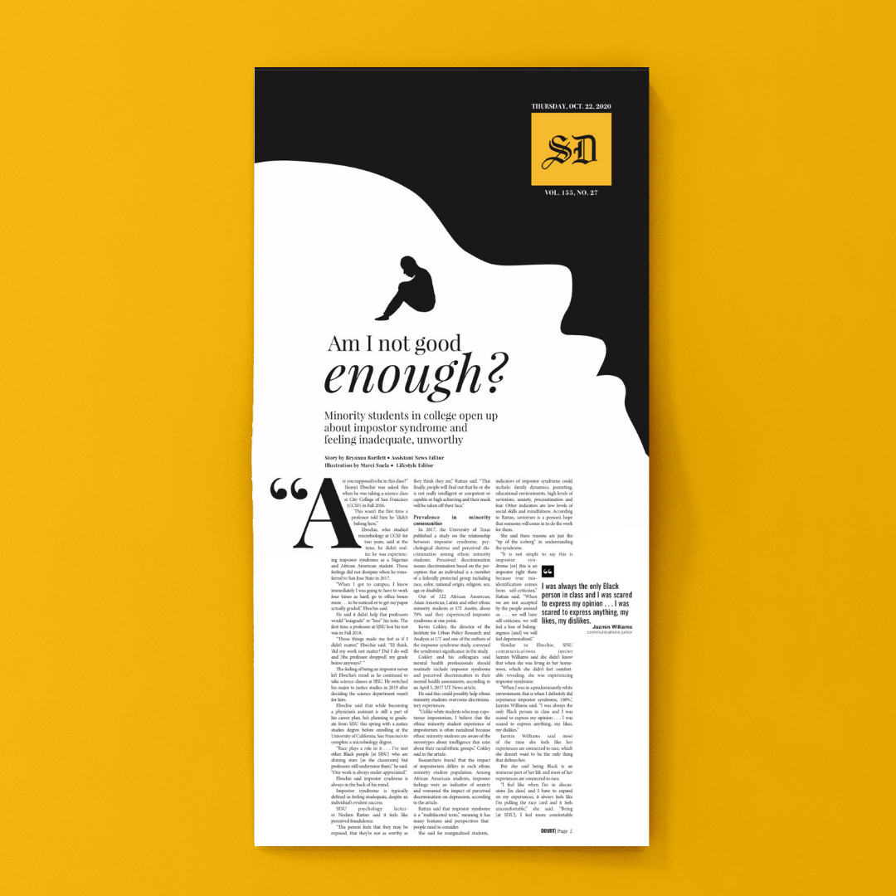
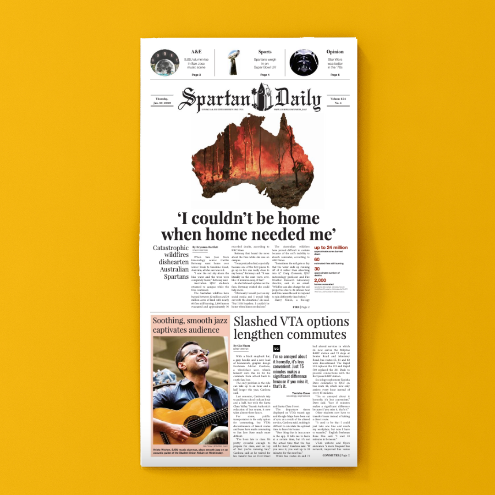
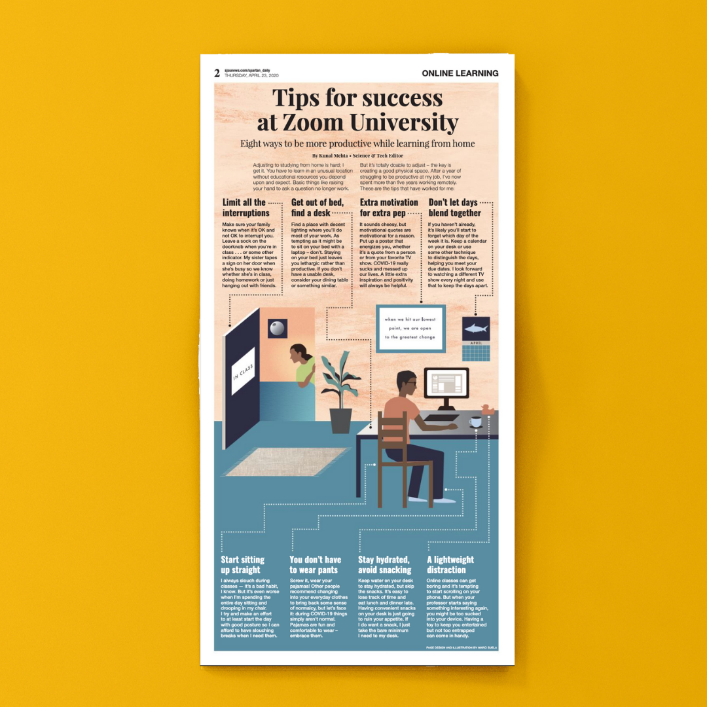

Design
Learn more details about my process
As the design chief of the Spartan Daily, I worked with writers and editors to brainstorm a vision for their story and then execute on the illustration and layout. Because the Spartan Daily is print-first, I've also brainstormed ways in using design to tailor their content across different platforms.

Impostor syndrome – Long-form storytelling, editing
I brought my own personal experience as a person of color with impostor syndrome to this story. Knowing how broad and vast the topic was, I reworked the 2,600+ word story to have a consistent theme and message for readers to take away.
For the illustration, I went with a simple black and white design that aimed to invoke the emotions of isolation and not belonging that those with impostor syndrome endure.
Read the story here. To view the social media cards of this story, click here.

Australian fires – Working on a tight deadline
When our original plan fell through, I had four hours to come up with a replacement. Despite experiencing California wildfires, most SJSU students didn't understand the impact and scope of the Australian wildfires. The design is straight to the point - it shows all of Australia, on fire.
Whitespace is used to ensure that no other content distracts from the illustration or headline quote.

Zoom University – Personalizing the content
After the COVID-19 pandemic upended education across the country, we put out a set of tips to help students adjust. My design and illustration is built around the concept that all of the tips come together to create a cohesive environment and using an actual setting allows people to relate to it.
Keeping in mind that most of our audience would read this on social media, from the beginning I designed it with Twitter and Instagram in mind, publishing interactive versions on those platforms.
I readjusted the design to fit Twitter, Instagram and Instagram Stories.